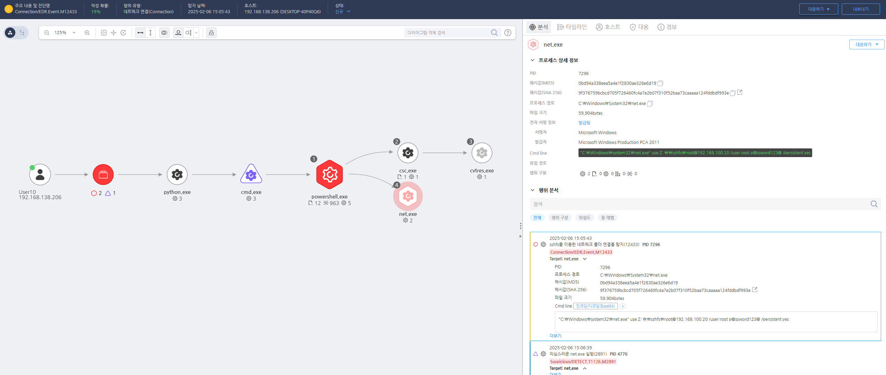

D3FEND
MITRE ATT&CK 액션을 기준으로 대응 방안을 작성
Detection
탐지 방법 작성, EFR과 무관하게 해당 Action에 대한 탐지 방법 명시
Detection(EDR)

Response
보안 위험을 최소화하기 위해 SSHFS의 사용을 제한하거나 금지하고 필요한 경우, 신뢰할 수 있는 사용자만 사용하도록 제한합니다.
Mitigations
1. Kerberos 티켓 보안 강화
- 티켓의 암호화 및 만료 시간을 짧게 설정하여, 공격자가 탈취한 티켓을 장기간 사용할 수 없도록 합니다.
- 티켓 갱신 기능을 비활성화하거나, 갱신 요청을 엄격하게 제한하여 공격자가 갱신을 악용할 수 없도록 합니다.
- Kerberos 인증에 사용하는 중앙 인증 서버(CA) 및 Key Distribution Center(KDC) 를 안전하게 보호하고 접근을 제한합니다.
2. 티켓 관리 및 모니터링
- 로그 분석을 통해 Kerberos 티켓의 발급 및 갱신 이벤트를 실시간으로 모니터링하고, 의심스러운 활동을 탐지합니다.
- SIEM(Security Information and Event Management) 시스템을 사용하여 이상 티켓 요청, 반복적인 갱신 요청, 의심스러운 IP 주소에서의 인증 시도를 탐지하고 경고를 발생시킵니다.
- 티켓 관련 이벤트 로그를 중앙 집중화하여 관리자들이 이를 신속하게 파악할 수 있도록 합니다.
3. MFA 및 권한 관리 적용
- 멀티팩터 인증(MFA) 을 Kerberos 인증에 통합하여, 티켓 탈취 또는 위조된 티켓으로 접근을 시도할 수 없도록 합니다.
- 최소 권한 원칙(Least Privilege) 을 적용하여 사용자가 불필요한 서비스나 시스템에 접근할 수 없도록 제한합니다.
4. Kerberos 및 Active Directory 강화
- Active Directory (AD) 및 Kerberos 관련 설정을 정기적으로 검토하고, 최신 보안 패치를 적용하여 알려진 취약점을 방지합니다.
- Active Directory 환경에서 Kerberos 티켓을 사용하는 시스템의 불필요한 서비스 계정을 제거하여 잠재적인 공격 표면을 줄입니다.
- KDC 보호 및 인증 서버에 대한 침해 탐지 시스템(IDS)을 배치하여 공격자가 이를 탈취하는 것을 방지합니다.
5. 사용자 교육 및 인식 제고
- 보안 인식 교육을 통해 사용자가 안전한 로그인 절차 및 자격 증명 관리에 대해 숙지하도록 합니다.
- 특히 KDC 및 Kerberos 인증 관련 보안에 대한 관리자 교육을 강화하여 티켓 갱신 및 위조에 대한 위협을 줄입니다.
Affected Techniques
Action 실행시 함께 영향을 받는 다른 Techniqes
|D3FEND|
|:-----------:|